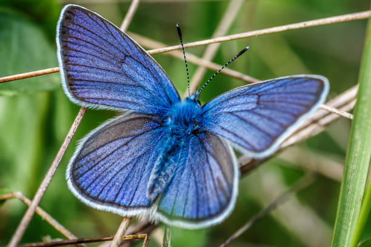

Maravillosas Mariposas
Las mariposas monarca poseen dos pares de brillantes alas color anaranjado,
con venas negras y manchas blancas a lo largo de los bordes.
Los machos poseen dos puntos negros a lo largo de las venas de sus alas
y son ligeramente más grandes que las hembras.

Conoce mas de las mariposas
Que es lo maravilloso de las mariposas monarca?
Uno de los aspectos más impresionantes de la mariposa monarca es su increíble capacidad migratoria.
Estas majestuosas criaturas recorren más de 4000 kilómetros desde sus áreas de distribución
estival en Canadá hasta las montañas del centro de México, donde pasan el invierno.
Durante la etapa de adulto, la mariposa se alimenta de néctar y pasa de ser un herbívoro a ser un
importante
polinizador. A través de su migración, estos pequeños insectos mueven el polen de las plantas con
flores,
promoviendo así la diversidad genética de las plantas.28 dic 2017
¿Qué pasaría si no existieran las mariposas monarcas?
Cuando mueren o hay menos reproducción de mariposas monarca en Estados Unidos y Canadá significa que
menos
mariposas migrarán hacia el sur, a México, a pasar el invierno. Entre las amenazas figuran la pérdida del
hábitat de cría, la exposición a pesticidas y el cambio climático, que puede provocar oscilaciones de
temperatura en las zonas de invernada de los insectos fuera de Ciudad de México. Sin embargo, otros
datos contradicen estos graves descensos.
Entre las amenazas figuran la pérdida del hábitat de cría, la exposición a pesticidas y el cambio
climático,
que puede provocar oscilaciones de temperatura en las zonas de invernada de los insectos fuera de Ciudad
de
México. Sin embargo, otros datos contradicen estos graves descensos.Entre las amenazas figuran la
pérdida del hábitat de cría, la exposición a pesticidas y el cambio climático, que puede provocar
oscilaciones de temperatura en las zonas de invernada de los insectos fuera de Ciudad de México. Sin
embargo, otros datos contradicen estos graves descensos.